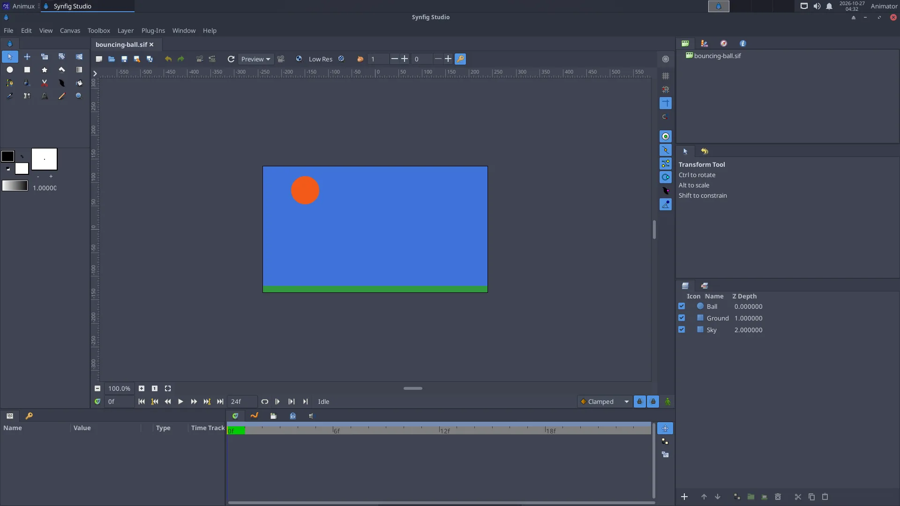

The bouncing ball teaches three of the twelve principles of animation: timing, slow in and slow out, and squash and stretch. Animux has a finished version as a sample: /usr/share/animux/samples/synfig/bouncing-ball.sif.


1. A new document#
- Start 2D Animation → Synfig Studio.
- Canvas → Properties (or the Canvas MetaData button): on the Time tab set End Time to
24(one second at 24 fps). Click OK.
2. Draw the ground and the ball#
- Pick the Rectangle tool and drag a long, thin rectangle at the bottom: the ground.
- Pick the Circle tool, choose a colour in the toolbox's Fill colour box, and drag a circle near the top: the ball.
3. Animate the fall and bounce#
- Click the Animation mode button at the bottom right of the canvas. The canvas gets a red border: from now on every change is recorded.
- Frame 0: the ball is at the top. Select the circle layer, and in Params right-click Origin → Add Waypoint (or simply move the ball a tiny bit).
- Move the time slider to frame 12. Drag the ball down until it touches the ground. A waypoint appears in the Timetrack.
- Move to frame 24 and drag the ball back to the top.
- Press Play (or drag the time slider). The ball goes down and up.
4. Make it feel heavy: slow in and out#
A real ball is slow at the top and fast at the bottom. In the Timetrack, right-click the waypoints at frames 0 and 24 → Both → Ease In/Out (slow), and the one at frame 12 → Both → Linear (fast, sharp bounce). Play again: it looks much more natural.
5. Squash and stretch#
At the moment of impact the ball squashes. Add this with a Scale or Stretch layer above the circle (Layer → New Layer → Distortions → Stretch):
- frame 10: amount
1.0, 1.1(a little stretched while falling fast); - frame 12: amount
1.3, 0.7(squashed on the ground); - frame 14: back to
1.0, 1.0.
Set the stretch's centre at the ball's bottom.
6. Export#
File → Render: file name ball.gif, Target gif, click Render. Or for editing in Kdenlive: target png (one image per frame).
From a terminal:
synfig ~/ball.sifz -t gif -o ~/ball.gif
Turn Animation mode off before you continue drawing, and save (File → Save, .sifz).
Next#
Make the ball bounce several times, lower each time; add a shadow that grows as the ball comes down. Then try a character with bones (Skeleton layer), see https://synfig.readthedocs.io/.